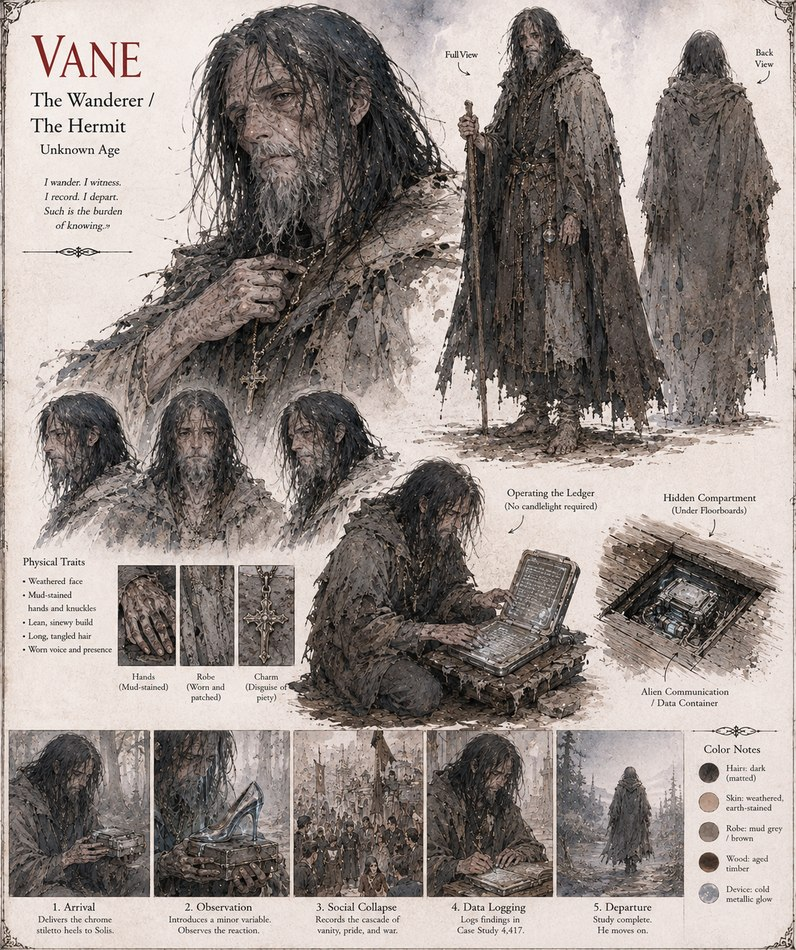

Vane
Envoy/Observer, Case 4,417 · “the Wanderer” · deployed disguised as a hermit
A field agent for the Cultivators, deployed to Solis disguised as a wandering hermit. He delivers the chrome stiletto heels at the center of the whole case as a single, unexplained gift, then lingers at the edges of both courts — gathering data on both sides of the war he sets in motion, and logging all of it, without candlelight, in Case Study 4,417. Offered at least one real chance to intervene before the worst of it, he declines to take it. When the study closes, the heels vanish with him, on schedule, and he simply moves on.
“I wander. I witness. I record. I depart. Such is the burden of knowing.”
Appears in The Iron Stiletto War